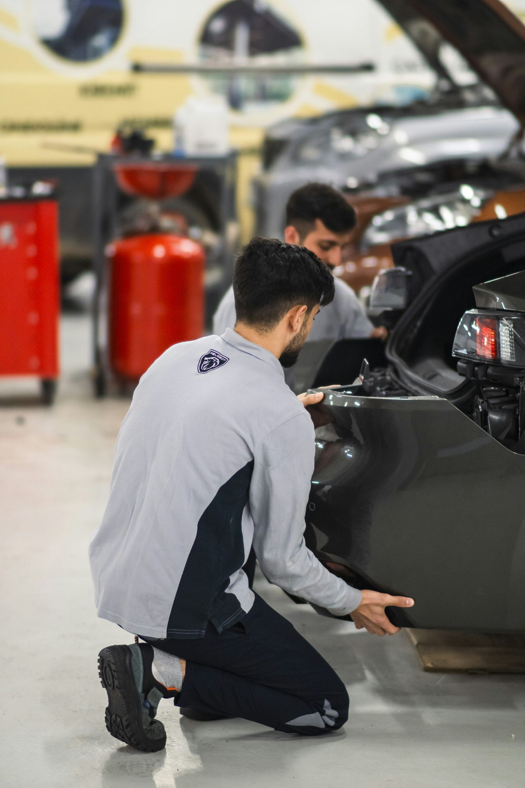

Běžné opravy
Servis a opravy osobních aut, od výměny oleje po opravy podvozku.
Kamil Korzonek, Sportovní 2474/5 v areálu panelárny, Karviná-Nové Město. Běžné opravy, výfuky, kompletní pneuservis a příprava na STK včetně karosářských prací.

Běžné opravy osobních aut, výfuky, pneumatiky a všechno, co auto potřebuje, aby prošlo technickou kontrolou.
Servis a opravy osobních aut, od výměny oleje po opravy podvozku.

Opravy a výměny výfuků, když auto bouchá nebo výfuk netěsní.

Kompletní pneuservis: přezutí, vyvážení a opravy pneumatik.

Opravíme rez a poškozené díly karoserie a připravíme auto na technickou.
Projděte si kontrolní seznam jako na technické. Co označíte jako závadu, pošlete nám a auto připravíme.
Ukázka ze seznamu. Celý má 15 bodů od světel po povinnou výbavu.
Sportovní 2474/5
735 06 Karviná-Nové Město
areál panelárny
Ukázat na mapě
kamil.korzonek@seznam.cz
IČO 41065921